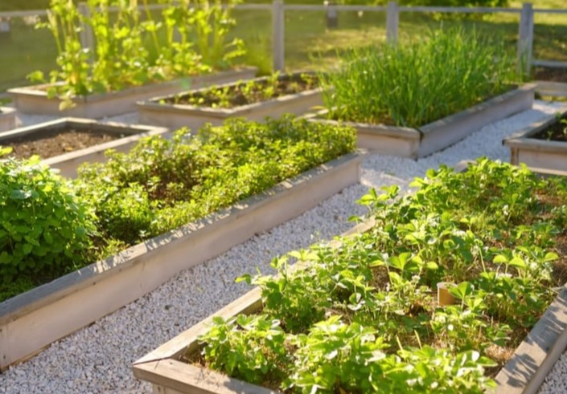

Cómo iniciar tu propio huerto urbano
Empezar un huerto urbano es una forma excelente de acercarte a la naturaleza y cultivar tus propios alimentos, incluso si vives en ciudad. No necesitas mucho espacio, solo dedicación y algunos materiales básicos.
Paso 1: Elige el lugar
Busca un espacio que reciba al menos 6 horas de sol al día: un balcón, terraza o incluso una ventana amplia puede ser suficiente.
Paso 2: Usa macetas adecuadas
Puedes reutilizar cajas, botellas o comprar jardineras ecológicas. Asegúrate de que tengan buen drenaje.
Paso 3: Escoge tus cultivos
Empieza con plantas fáciles como lechuga, tomate cherry, albahaca o rabanitos.
Paso 4: Riega con conciencia
No todas las plantas necesitan la misma cantidad de agua. Usa agua de lluvia si es posible y evita el exceso.
Un huerto urbano no solo aporta alimentos sanos, también bienestar, conexión con la naturaleza y satisfacción personal.